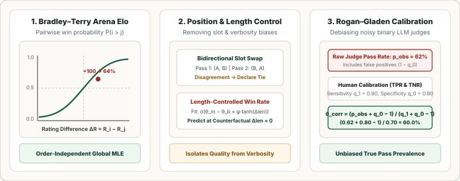

LLM & Judge Metrics: Bradley–Terry Arena Elo, Length-Controlled Win Rate, and Judge Calibration
Open-ended instruction following has no single reference string, so modern LLM benchmarks evaluate responses using pairwise human comparisons (Chatbot Arena) or automated LLM-as-a-Judge graders. This chapter derives the Bradley–Terry maximum-likelihood Elo model, formalizes position-swap and length-controlled win rates to strip out judge biases, and derives the Rogan–Gladen prevalence correction for noisy binary judges.

1. Pairwise Preference Modeling: Bradley–Terry MLE and Arena Elo
Given $M$ competing models with latent log-strengths $\boldsymbol{\beta} = (\beta_1, \dots, \beta_M)^\top$, the Bradley–Terry (1952) model defines the probability that model $i$ beats model $j$ as the logistic function of their strength difference. On the standard $400$-point base-$10$ Elo scale where $\beta_i = \frac{\ln 10}{400}R_i$:
Sequential chess Elo updates $R_i \leftarrow R_i + K(S_{ij} - E_{ij})$ depend on the chronological order of matches. Instead, Chatbot Arena (Chiang et al., 2024) aggregates all pairwise win counts $W_{ij}$ (splitting ties $0.5/0.5$ or using the Davidson tie model) and computes the global logistic regression maximum-likelihood estimate (MLE), anchored at a reference rating $R_{\text{ref}} = 1000$:
| Elo Gap $\Delta R = R_i - R_j$ | Log-Odds $\Delta\beta = \frac{\ln 10}{400}\Delta R$ | Exact Win Formula $\frac{1}{1 + 10^{-\Delta R/400}}$ | Expected Win Probability $\Pr(i \succ j)$ | Odds Ratio $10^{\Delta R / 400}$ |
|---|---|---|---|---|
| $0\text{ Elo}$ | $0.0000$ | $\frac{1}{1 + 1}$ | $\mathbf{50.00\%}$ | $1.00 : 1$ |
| $+50\text{ Elo}$ | $+0.2878$ | $\frac{1}{1 + 10^{-0.125}}$ | $\mathbf{57.15\%}$ | $1.33 : 1$ |
| $+100\text{ Elo}$ | $+0.5756$ | $\frac{1}{1 + 10^{-0.25}}$ | $\mathbf{64.01\%}$ | $1.78 : 1$ |
| $+200\text{ Elo}$ | $+1.1513$ | $\frac{1}{1 + 10^{-0.50}}$ | $\mathbf{75.97\%}$ | $3.16 : 1$ |
| $+400\text{ Elo}$ | $+2.3026$ | $\frac{1}{1 + 10^{-1.00}}$ | $\mathbf{90.91\%}$ | $10.00 : 1$ |
2. Position Swapping and Length-Controlled Win Rate (LC-AlpacaEval)
Automated LLM judges exhibit three systematic biases: position bias (favoring whichever response appears first in the prompt), verbosity bias (favoring longer answers regardless of substance), and self-enhancement bias (favoring outputs from the same model family). Standard evaluation pipelines apply two structural corrections:
- Bidirectional Position Swap (MT-Bench, Zheng et al., 2023): Every pair $(y_A, y_B)$ is graded twice—once in slot order $(A, B)$ and once in reversed order $(B, A)$. If the judge selects the same model in both passes, that model wins ($S = 1$); if the judge flips its preference between passes, the comparison is recorded as a tie ($S = 0.5$).
- Length-Controlled Win Rate (Dubois et al., 2024): To prevent models from gaming win rates by padding answers, LC-AlpacaEval fits a generalized linear model (GLM) separating intrinsic model skill $\theta_m - \theta_b$ from normalized length difference $\Delta\text{len} = \text{len}(y_m) - \text{len}(y_b)$:
$$\hat q(y_m \succ y_b \mid x) = \sigma\!\left(\theta_m - \theta_b + \psi_x + \phi\,\tanh\!\left(\frac{\text{len}(y_m) - \text{len}(y_b)}{\sigma_L}\right)\right).$$Evaluating the fitted model at the counterfactual $\text{len}(y_m) = \text{len}(y_b)$ ($\Delta\text{len} = 0$) yields the Length-Controlled Win Rate $\operatorname{LC-WR}(m, b) = \frac{1}{N}\sum_{x=1}^N \sigma(\hat\theta_m - \hat\theta_b + \hat\psi_x) \times 100\%$.
3. Pointwise Judge Calibration: Rogan–Gladen Prevalence Correction
When a binary LLM judge ($\hat J \in \{0, 1\}$) grades production responses for a true quality property $Y \in \{0, 1\}$ whose true pass prevalence is $\theta = \Pr(Y = 1)$, its sensitivity $q_1 = \Pr(\hat J = 1 \mid Y = 1)$ and specificity $q_0 = \Pr(\hat J = 0 \mid Y = 0)$ can be measured on a small human-labeled calibration set. By the law of total probability, the raw observed judge pass rate is:
Solving for $\theta$ gives the Rogan–Gladen (1978) estimator, where the denominator $J = q_1 + q_0 - 1 > 0$ is Youden's index:
Worked Calibration Example ($q_1 = 0.90$ sensitivity, $q_0 = 0.80$ specificity, so $q_1 + q_0 - 1 = 0.70$):
| Regime | Raw Judge Rate $\hat p_{\text{obs}}$ | Rogan–Gladen Numerator $\hat p_{\text{obs}} + q_0 - 1$ | Corrected Pass Rate $\hat\theta_{\text{corr}}$ | Raw Judge Distortion $\hat p_{\text{obs}} - \hat\theta_{\text{corr}}$ |
|---|---|---|---|---|
| Low True Pass Rate | $30.5\%$ | $0.305 + 0.80 - 1 = 0.105$ | $\frac{0.105}{0.70} = \mathbf{15.0\%}$ | $+15.5\%$ (false positives dominate) |
| Moderate Pass Rate | $62.0\%$ | $0.620 + 0.80 - 1 = 0.420$ | $\frac{0.420}{0.70} = \mathbf{60.0\%}$ | $+2.0\%$ (slight overestimate) |
| High True Pass Rate | $83.0\%$ | $0.830 + 0.80 - 1 = 0.630$ | $\frac{0.630}{0.70} = \mathbf{90.0\%}$ | $-7.0\%$ (false negatives dominate) |
4. Reference Python Implementation
import math
def bradley_terry_win_prob(elo_i: float, elo_j: float) -> float:
"""Expected win probability P(i > j) on the 400-point logistic Elo scale."""
return 1.0 / (1.0 + 10.0 ** ((elo_j - elo_i) / 400.0))
def lc_win_rate_counterfactual(theta_m: float, theta_b: float) -> float:
"""Counterfactual win probability at equal response length (delta_len = 0)."""
return 1.0 / (1.0 + math.exp(-(theta_m - theta_b)))
def rogan_gladen_correction(p_obs: float, q1_sens: float, q0_spec: float) -> float:
"""Debiased prevalence estimator given judge sensitivity q1 and specificity q0."""
youden_j = q1_sens + q0_spec - 1.0
if youden_j <= 0:
raise ValueError("Judge must be better than random (q1 + q0 > 1).")
return max(0.0, min(1.0, (p_obs + q0_spec - 1.0) / youden_j))
print("P(Elo +100) :", round(bradley_terry_win_prob(1100, 1000), 4))
print("P(Elo +200) :", round(bradley_terry_win_prob(1200, 1000), 4))
for p_raw in (0.305, 0.620, 0.830):
print(f"Raw {p_raw:.3f} -> Corrected {rogan_gladen_correction(p_raw, 0.90, 0.80):.4f}")Sources
Bradley and Terry, Rank Analysis of Incomplete Block Designs: I. The Method of Paired Comparisons (Biometrika, 1952); Zheng et al., Judging LLM-as-a-Judge with MT-Bench and Chatbot Arena (NeurIPS, 2023); Chiang et al., Chatbot Arena: An Open Platform for Evaluating LLMs by Human Preference (ICML, 2024); Dubois et al., Length-Controlled AlpacaEval (arXiv, 2024); Rogan and Gladen, Estimating Prevalence from the Results of a Screening Test (American Journal of Epidemiology, 1978).